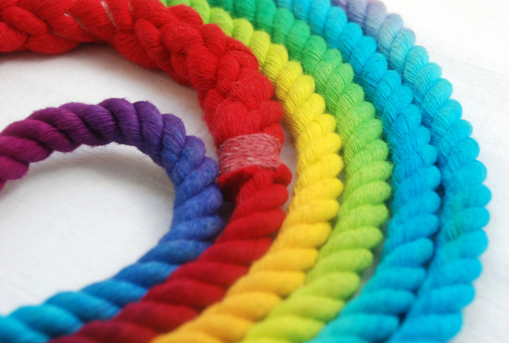
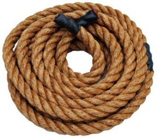

Ropes for kids
This product is for kids ages 5-12 years. This is a safe rope for children and is extra safe due to its appealing color. When purchased, parents do not have to worry about their children getting injured!
- 5 meters long
- 2 centimeters thick
- Safe for Children
- Comes in 6 different colors
- Did I say Safe for Children? It's kid safe!!!
- Yours for only $199.99
Ropes for Elderly
This product is for Elders ages 70 years-death. This is a safe rope for elderly. They can use it to help brew their tea and hang around in their front porch thinking about nature and life!
- 10 meters long
- 5 centimeters thick
- Multi-Purpose
- Comes in classy brown
- Twisted to perfection
- Yours for only $299.99